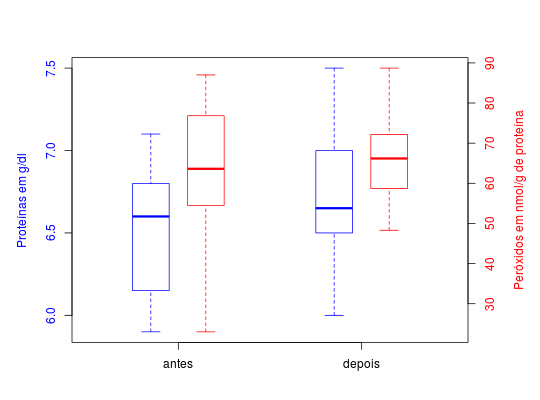

Dados observados de um estudo realizado no laboratório de Bioquímica Clínica do Departamento de Análises Clínicas e Toxicológicas da Universidade Federal de Alfenas (UNIFAL), no qual o interesse era testar se a rotina de exercícios físicos intensos não tem efeito sobre o estresse oxidativo (estresse causado pelo aumento de radicais livres), no plasma de mulheres da terceira idade. O estudo consistiu na avaliação de 16 mulheres da terceira submetidas ao exercício físico durante 4 semanas, as avaliações ocorreram antes e depois do tratamento com exercícios físicos.
Um data.frame com 32 observações e 3 variáveis.
amostraproteinaperoxidoFERREIRA (2011), (Exemplo 7.1 pág. 286)
data(FerreiraEg7.1)#> Warning: data set ‘FerreiraEg7.1’ not foundstr(FerreiraEg7.1)#> 'data.frame': 32 obs. of 3 variables: #> $ amostra : Factor w/ 2 levels "antes","depois": 1 1 1 1 1 1 1 1 1 1 ... #> $ proteina: num 6 6 6.9 5.9 7 6.3 6.5 5.9 6.8 6.8 ... #> $ peroxido: num 53 79 62 74.7 85 62.9 65.1 80.3 56 47 ...aggregate(peroxido ~ amostra, data = FerreiraEg7.1, summary)#> amostra peroxido.Min. peroxido.1st Qu. peroxido.Median peroxido.Mean #> 1 antes 23.00 55.25 63.61 64.23 #> 2 depois 48.30 58.90 66.18 65.57 #> peroxido.3rd Qu. peroxido.Max. #> 1 75.78 87.00 #> 2 72.08 88.70aggregate(proteina ~ amostra, data = FerreiraEg7.1, summary)#> amostra proteina.Min. proteina.1st Qu. proteina.Median proteina.Mean #> 1 antes 5.900 6.225 6.600 6.531 #> 2 depois 6.000 6.500 6.650 6.738 #> proteina.3rd Qu. proteina.Max. #> 1 6.800 7.100 #> 2 7.000 7.500par(mar = c(4, 5, 4, 5)) boxplot(proteina ~ amostra, data = FerreiraEg7.1, xlim = c(0.5, 2.5), border = 4, boxwex = 0.2, at = 1:2 - 0.15, axes = FALSE)box()axis(side = 2, col.axis = 4)mtext(side = 2, text = "Proteínas em g/dl", line = 3, col = 4)par(new = TRUE, mar = c(4, 5, 4, 5)) boxplot(peroxido ~ amostra, data = FerreiraEg7.1, xlim = c(0.5, 2.5), border = 2, boxwex = 0.2, at = 1:2 + 0.15, axes = FALSE)axis(side = 4, col.axis = 2)axis(side = 1, at = 1:2, labels = c("antes", "depois"))mtext(side = 4, text = "Peróxidos em nmol/g de proteína", line = 3, col = 2)